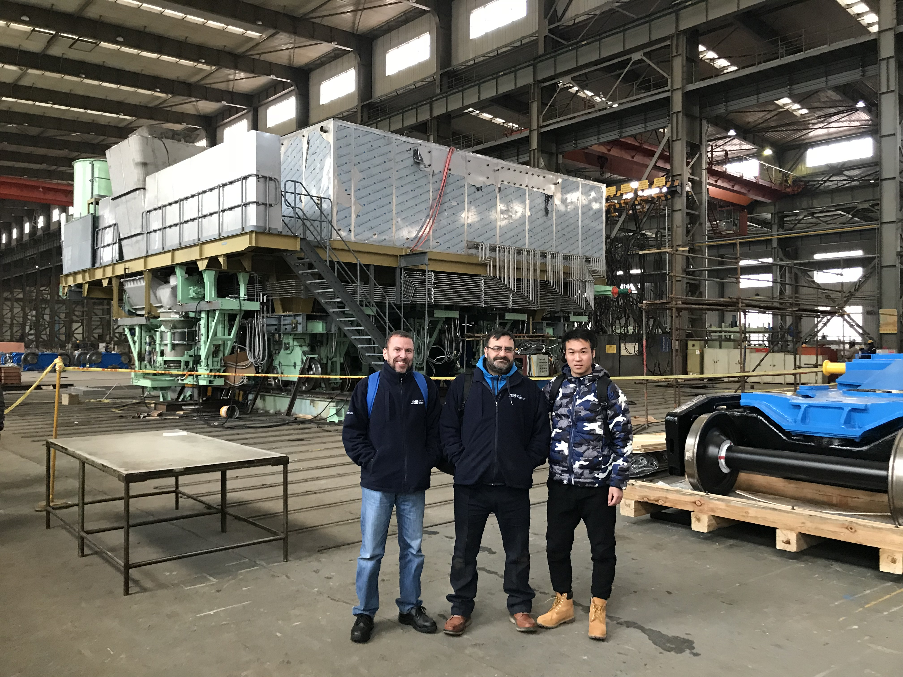
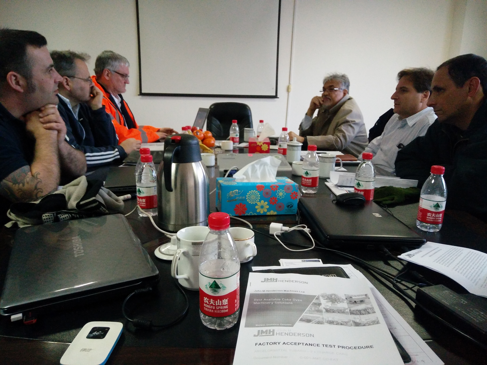
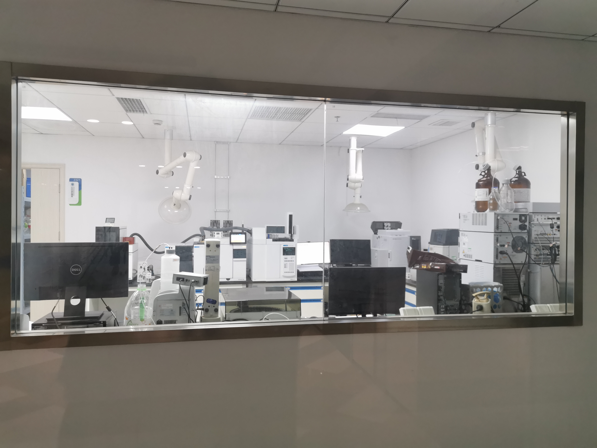

Proven Track Record
With 15 years of deep industry involvement, we have evolved from a specialized engineering team into a comprehensive sourcing and supply chain partner. We help global buyers navigate the complexity of the Chinese market across multiple high-stakes sectors.
Integrated Industrial & Technical Solutions
Our core strength lies in our ability to integrate resources across diverse fields. Whether it is heavy machinery for infrastructure or specialized components for emerging industries, we provide a consistent standard of quality and transparency.
重工与基础设施 (Industrial & Heavy Equipment)
From complex coke oven machinery to structural steel works, we handle the entire lifecycle—from technical design audit and raw material selection to on-site installation and quality inspection. Our engineering background ensures every weld and hydraulic component meets global standards.
环保与医疗科技 (Environmental & Medical Tech)
We leverage our network in China's innovation hubs to source cutting-edge environmental equipment and medical consumables. We prioritize suppliers with robust quality management systems (ISO 13485 for medical) and sustainability certifications.
Strategic Consulting & Logistics
We are not just a sourcing agent; we are your local business desk in China.
- Technical & Commercial Consulting: Helping clients localize their business, understand regulatory compliance, and bridge cultural gaps during negotiations.
- Cross-Border Logistics: Seamless export management. Whether it's heavy industrial machinery needing specialized shipping or time-sensitive technology components, we ensure safe and efficient delivery.
- New Tech Sourcing: Assisting companies in tapping into China's fast-paced tech innovation sector to identify potential customized solutions.

On-site project management for industrial facility installation.

Technical audit and quality verification of precision components.

Coordinating multi-party technical discussions for localization.